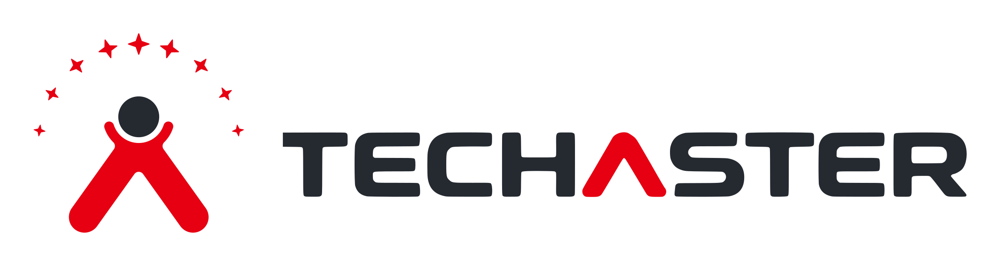

ITプロジェクト支援
準委任契約により、お客様の現場で技術者が業務を担当します。案件の要件に合う技術者を選び、体制をご提案します。
複数名体制や長期案件にも対応します。

株式会社テックアスター会社案内
| 会社名 | 株式会社テックアスター（TECHASTER） |
|---|---|
| 設立 | 2017年11月 |
| 代表者 | 潘龍 鉄成 |
| 資本金 | 480万円 |
| 法人番号 | 2010001187627 |
| 所在地 | 〒220-0004 神奈川県横浜市西区北幸二丁目10番48号 むつみビル3階 |
| 体制 | 代表者を窓口とし、案件の内容に応じて協業先と連携して事業を行っています。 |
準委任契約により、お客様の現場で技術者が業務を担当します。案件の要件に合う技術者を選び、体制をご提案します。
複数名体制や長期案件にも対応します。
案件の内容に応じて協力会社とも連携し、要件定義からリリース・運用まで対応します。
小規模な開発や技術検証から、ご相談を受けます。
業務の課題を伺い、業務効率化に向けて、AIサービスの業務への取り入れ方を提案します。
AIの活用提案から、導入後の改善まで、必要な範囲で支援します。
5つの技術領域は、3つの支援サービスを通じて対応します。案件に応じて必要な専門性を組み合わせます。
| 対応業務分野 | 主な業務内容 |
|---|---|
| インフラ | サーバー、ネットワーク、ストレージ、クラウド・仮想化基盤の設計・構築・更改・移行・運用 |
| セキュリティ | リスク評価、脆弱性対策、EDR等の導入、SOC・CSIRT、インシデント対応 |
| PM/PMO | 計画策定、進捗・課題・リスク・品質管理、要件整理、関係者・ベンダー調整 |
| ソフトウェア開発 | 業務・Web・通信・組み込みソフトウェアの要件定義、設計、開発、テスト、リリース、保守。技術検証・試作開発・共同研究 |
| AI(FDE) | 業務分析・再設計、AI導入企画、AIエージェント・RAG・API連携の開発、PoC、現場導入、効果検証・継続改善 |
対応工程や技術構成は案件ごとに設計します。日本語・英語・中国語など、語学力のある技術者のご提案もご相談ください。
| 対応領域 | 対応業務・工程 | 主な対応事例・技術 |
|---|---|---|
| 通信インフラ関連の開発・運用・保守 |
|
通信キャリア向け伝送ネットワーク機器（PTN等）、コアネットワーク関連サーバー・システム |
| 業務システム更改・移行 |
|
銀行システム、データ連携基盤の更改・移行プロジェクト |
| 通信ソフトウェア・プロトコル対応 |
|
3G／PHS／Wi-Fi対応通信接続ツール、VPN機器、IPsec・KINK等 |
| 組み込みソフトウェア・機器制御 |
|
決済端末向け通信モジュール、医療用モニターの制御アプリケーション |
掲載しているのは対応案件の一部で、代表者個人が経験した案件を含みます。取引先名は非公開としています。
専門性や実務経験を持つIT技術者とのネットワークを活用し、案件要件に適した技術者をご提案します。
協力会社との連携により、多様な技術・経験を持つ人材の確保やチーム編成を支援します。（複数名体制や長期案件など）
技術スキル、業務経験、語学力、稼働条件などを確認し、案件に合う技術者を選んでご提案します。
業務課題に応じたAI活用を企画し、業務の見直しから実装・現場定着まで支援します。FDEは、お客様の現場で業務と技術をつなぎ、導入後の改善まで推進するエンジニアです。
業務分析、業務フローの可視化・改善
情報検索、ナレッジ共有、情報管理
生成AIによる資料作成、要約、データ整理
AIエージェント、業務タスクの自動化
経営目標、現場の課題、目指す成果を整理。
業務、データ、既存システム、課題を調査。
人・AI・システムの役割と成功基準を設計。
AIエージェント、RAG、API連携などを実装・検証。
効果を評価し、本番導入と運用改善を推進。
基本方針：AIの導入自体を目的とせず、業務に合う仕組みを設計し、現場で活用され続ける状態を目指します。
人と技術をつなぎ、次の価値へ。
インフラ領域を強みとして、ITエンジニアリングとプロジェクト支援に注力します。
ソフトウェア開発やAI・AXの活用にも取り組み、お客様の課題解決とビジネスの成長を支援します。
お問い合わせ：info@techaster.com